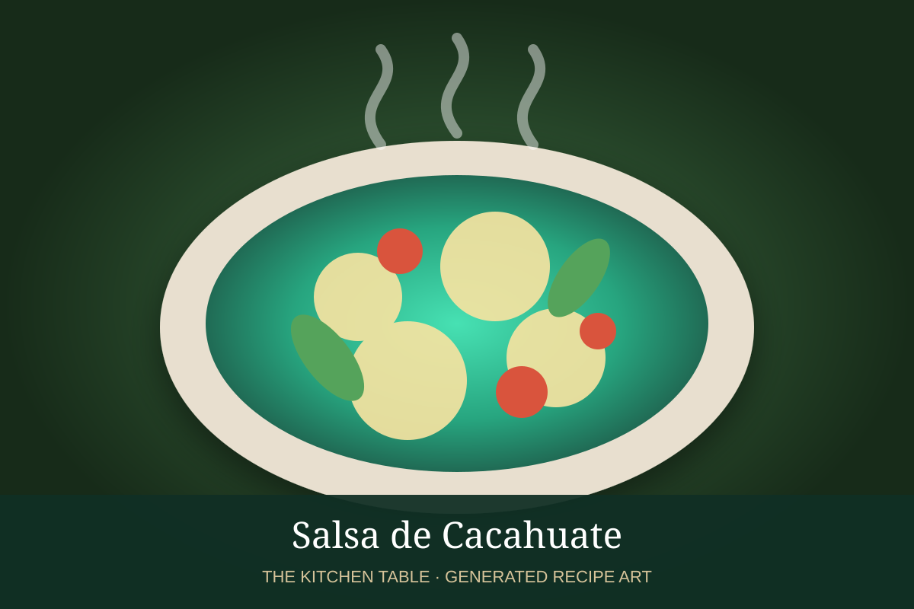

← Back to all recipes
SAUCE · MEXICAN
Salsa de Cacahuate
A spicy, nutty peanut salsa with chile de árbol, roasted tomato, garlic, and toasted peanuts.
20 minMakes about 2 cups

Photo: Kvalifood
Ingredients
- 1 cup roasted unsalted peanuts
- 6 dried chiles de árbol
- 2 Roma tomatoes
- 2 garlic cloves
- 1/2 cup water
- 1 tbsp neutral oil
- 1 tsp kosher salt
Preparation
- Toast chiles briefly and set aside.
- Roast tomatoes and garlic until charred and soft.
- Blend peanuts, chiles, tomatoes, garlic, salt, and water until creamy but slightly textured.
- Heat oil in a skillet and cook the salsa for 3 to 5 minutes.
- Thin with water if needed and adjust salt.